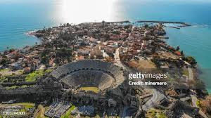

About Antalya
Antalya is a stunning Turkish resort city with a yacht-filled Old Harbor and beaches flanked by large hotels. It is known for its Roman gates, Hellenistic walls, and accessibility-friendly public spaces.
Antalya is a stunning Turkish resort city with a yacht-filled Old Harbor and beaches flanked by large hotels. It is known for its Roman gates, Hellenistic walls, and accessibility-friendly public spaces.